품질경영산업기사 (2018-09-15 기출문제)
1과목: 실험계획법
1. 반복 없는 2요인 실험에서 구할 수 없는 것은? (단, A, B 모두 모수요인이다.)
- 요인 A의 효과
- 잔차 제곱함
- 요인 B의 효과
- 교호작용의 효과
(정답률: 72%)

2. 1요인 실험에 관한 설명으로 틀린 것은?
- 반복수가 일정하지 않아도 실험할 수 있다.
- 교호작용에 대한 검정을 반드시 행해야 한다.
- 결측치가 있어도 이를 추정하여 넣어 줄 필요가 없다.
- 어떤 특정한 하나의 요인만의 영향을 조사하고자 한다.
(정답률: 61%)
3. 보일러 부식으로 SO3(%)가 무제가 되어 기름의 종류(A)에 따른 SO3(%)를 측정한 데이터와 분산분석표이다. μ(A1)와 μ(A3)의 평균치 차를 구간추정하면 약 얼마인가? (단, α = 0.⑤, t0.95(3) = 2.353, t0.975(3) = 3.182, t0.95(14) = 1.761, t0.975(14) = 2.145 이다.)
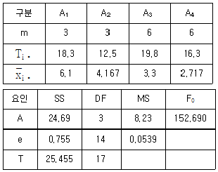
- 2.278 ≤ μ(A1) - μ(A3) ≤ 3.322
- 2.414 ≤ μ(A1) - μ(A3) ≤ 3.186
- 2.448 ≤ μ(A1) - μ(A3) ≤ 3.152
- 2.511 ≤ μ(A1) - μ(A3) ≤ 3.089
(정답률: 40%)
4. L8(27) 직교배열표를 이용한 실험설계 시 교호작용의 배치방법으로 틀린 것은?
- 교호작용 A×B는 1개의 열에 배치된다.
- 두 열의 교호작용은 두 열의 기본표시의 합의 열에 나타난다.
- 교호작용은 요인의 배치된 두 열의 기본표시 곱의 열에 배치된다.
- 기본표시 ab에 요인 A를, 기본표시 ac에 요인 B를 배치하면 교호작용은 기본표시 bc열에 배치한다.
(정답률: 58%)
5. 회귀식을 구할 목적으로 다음의 값을 산출하였다. 기여율로 맞는 것은?
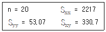
- 41.83%
- 90.⑤%
- 92.95%
- 96.41%
(정답률: 58%)
6. 실험에 있어서 데이터에 산포를 준다고 생각되는 무수히 존재하는 원인들 중에서 실험에 직접 취급되는 원인을 무엇이라 하는가?
- 요인
- 효과
- 교락
- 수준
(정답률: 58%)
7. 수준이 k인 라틴방격법에서 μ(AiBj)의 유효반복수는?
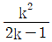
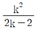
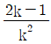
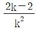
(정답률: 61%)
8. 반복이 없는 2요인 실험의 경우 2요인 수준조합에서 모평균의 추정이 가장 의미있는 경우는?
- A 요인만 유의한 경우
- B 요인만 유의한 경우
- A, B 요인이 모두 유의한 경우
- A, B 요인이 모두 유의하지 않을 경우
(정답률: 67%)
9. 어느 프레스 공정에서 근무하는 전체 작업자 중 5명을 임의로 추출하여 이 작업자들에게 의해 만들어지는 제품의 부적합품을 조사하였더니 다음과 같았다. VA는 약 얼마인가?
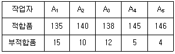
- 0.116
- 0.145
- 0.193
- 0.579
(정답률: 57%)
10. l개의 수준으로 구성된 모수요인(fixed factor)에 대한 설명으로 틀린 것은?
- ai 들의 합은 0 이다.( 즉,
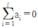
) - 기술적으로 미리 정해진 수준이 사용된다.
- 각 요인 수준의 효과를 ai 라고 할 때 E(ai) = ai, Var(ai) = 0 이 된다.
- ai 들의 분포의 분산은
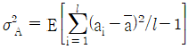
이다.
(정답률: 57%)
11. 요인의 수준수가 4, 반복이 5회인 1요인 실험에서 ST = 1.5, SA = 0.85 를 얻었다. 요인 A의 순 제곱합(
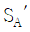
)은 약 얼마인가?- 0.65
- 0.73
- 0.85
- 0.97
(정답률: 58%)
12. 다음은 어떤 모수모형 1요인 실험의 데이터이다. 실험에 관한 설명 중 틀린 것은?
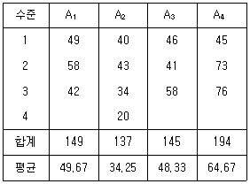
- SA는 약 1598.17 이다.
- CT는 약 32552.08 이다.
- 오차항의 자유도는 9 이다.
- 요인 A의 자유도는 3 이다.
(정답률: 41%)
13. 표와 같은 L8(27) 직교배열표에서 요인 D의 효과는 얼마인가?
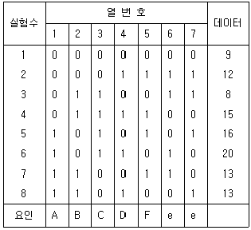
- 2.45
- 3.00
- 3.50
- 24.50
(정답률: 25%)
14. 반복 3회인 모수모형 2요인 실험에서 요인 A가 5수준, 요인 B가 6수준이라면 교호작용 A×B의 자유도는?
- 4
- 5
- 20
- 60
(정답률: 60%)
15. 난괴법 실험에서 A(모수요인), B(변량요인) 각각 3수준씩 선정하여 분석한 경우 A의 기대평균제곱 E(VA)는?
- σ2A
- σ2e + 2σ2A
- σ2e
- σ2e + 3σ2A
(정답률: 74%)
16. 반복이 있는 모수모형 2요인 실험에서 교호작용이 유의할 경우의 검정방법으로 맞는 것은? (단, A, B는 모수요인이다.)
- A, B 및 A×B를 전부 e로 검정한다.
- A, B 는 A×B로 검정하고 A×B는 e로 검정한다.
- A는 A×B로 검정하고, B와 A×B는 e로 검정한다.
- B는 A×B로 검정하고, A와 A×B는 e로 검정한다.
(정답률: 55%)
17. l = 4, m = 3인 1요인 실험에서 분산분석 결과 Ve = 0.0465 이었고,
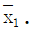
= 8.360,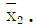
= 8.70 이었다. μ(A1)과 μ(A2)의 평균치 차를 α=0.01로 구간추정하면 약 얼마인가? (단, t0.995(8) = 3.355, t0.99(8) = 2.896 이다.- -0.251 ≤ | μ(A1) - μ(A2) | ≤ 0.931
- -0.172 ≤ | μ(A1) - μ(A2) | ≤ 0.852
- -0.170 ≤ | μ(A1) - μ(A2) | ≤ 0.850
- -0.102 ≤ | μ(A1) - μ(A2) | ≤ 0.781
(정답률: 54%)
18. 다음은 결측치가 있는 모수모형 2요인실험의 데이터이다. 결측치 예측에 관한 설명으로 틀린 것은?
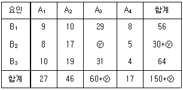
- 결측치의 추정값은 30 이다.
- 위의 데이터에서 만약 추정값이 소수점 아래 값이 나오면 일반적으로 데이터의 자리수와 같게 조정한다.
- 반복 없는 2요인 실험은 결측치가 많을 경우 실험 전체에 의문이 생기기도 실험 전체를 다시 하는 경우도 흔치 않게 발생한다.
- 분산분석을 할 때 결측치의 추정값은 형식적으로만 계산할 뿐 제곱합을 계산할 때는 배제하고 실제 데이터로만 계산한다.
(정답률: 58%)
19. k×k 라틴방격법의 분산분석법에 관한 설명으로 맞는 것은?
- 교호작용을 검출할 수 있다.
- 요인의 자유도는 k-1 이 된다.
- 총 실험횟수는 k2-1 이 된다.
- 오차의 자유도가 1 이상이 되려면 k는 2 이상 되어야 한다.
(정답률: 38%)
20. 다음은 반복이 일정한 어느 변량모형 1요인 실험결과이다. 실험에 관한 설명 중 틀린 것은?
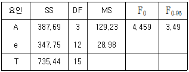
- 실험에 적용된 변량요인 A 의 수준수는 4 이다.
- 유의수준 5%로 요인 A가 유의하므로 σ2A의 추정이 필요하다.
- 요인 A 의 분산의 추정치는
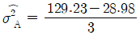
이다. - 요인 A 가 유의하여도 요인의 각 수준에서 모평균의 추정은 의미가 없다.
(정답률: 50%)
2과목: 통계적품질관리
21. c관리도에 대한 설명으로 맞는 것은?
- 계량형 관리도이다.
- 관리한계 UCL과 LCL은
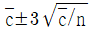
와 같이 구한다. - 부적합수는 이항분포를 따른다는 성질을 이용한다.
- 검사단위가 일정한 제품의 부적합 수의 관리에 이용한다.
(정답률: 42%)
22. 샘플링 방법의 설명으로 틀린 것은?
- 시간적 또는 공간적으로 일정간격을 두고 샘플링하는 방법을 계통 샘플링이라 한다.
- 제조공정의 품질특성에 주기적인 변동이 있는 경우 계통 샘플링을 적용하는 것이 좋다.
- 집락(군집) 샘플링에서 구내는 불균일, 군간은 균일하게 합격품질한계군을 형성한다.
- 모집단을 몇 개의 층으로 나누어 각 층마다 랜덤하게 시료를 추출하는 것을 층별 샘플링한다.
(정답률: 40%)
23. 모공분산(σ2xy)이 0인 경우의 설명으로 맞는 것은?
- 두 변량 사이에 상관관계가 있다.
- 두 변량 사이에 상관관계가 없다.
- 상관관계까 있는지 없는지 모른다.
- x의 변화에 대응하여 y가 직선으로 변한다.
(정답률: 58%)
24. 기준값이 주어지지 않은 경우, R관리도와 s관리도의 설명 중 틀린 것은?
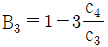
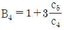
- s 관리도의
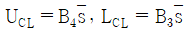
- R 관리도의
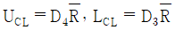
(정답률: 35%)
25. 계수형 샘플링검사 절차 – 제1부 : 로트별 합격품질한계(AQL) 지표형 샘플링검사 방식(KS ISO Q 2859-1 : 2014)에서 까다로운 검사를 개시한 후 불합격 로트의 누계가 5일 때, 취할 수 있는 조치로 가장 적합한 것은?
- 검사 중지
- 보통검사로 전환
- 수월한 검사로 전환
- 까다로운 검사의 조건을 강화
(정답률: 74%)
26. 측정치의 크기 순서로 배열하였을 때 한가운데 위치하는 값을 무엇이라 하는가?
- 중앙값
- 산술평균
- 최빈값
- 표준편차
(정답률: 68%)
27. 종래의 작업방법에 의한 제품의 품질특성치 xi의 분포는 (4.55, σ2)이다. 새로운 작업방법에 의해 제조한 로트로부터 샘플을 10개 취해 ∑xi = 47.8, ∑x2i = 248.6 을 얻었다. 새로운 작업방법에 의한 제품의 품질특성치의 모평균이 종래의 모평균과 다르다고 할 수 있는지 검정하고자 할 때, 검정통계량 t0는 약 얼마인가?
- 0.28
- 0.49
- 19.86
- 23.54
(정답률: 31%)
28. 계수 및 계량 규준형 1회 샘플링 검사(KS Q 0001:2013) 규격에서 계수 규준형 1회 샘플링검사의 설명으로 틀린 것은?
- 제1종 오류(α)를 고려하여 합격시키고 싶은 부적합품률 p0를 설정한다.
- 일반적으로 소비자측이 생산자보다 유리한 조건으로 설계되는 방식이다.
- 첫거래에도 적용할 수 있으며, 파괴검사에도 적용이 가능하다.
- 제2종 오류(β)를 고려하여 합격시키고 싶지 않은 부적합품률 p1을 설정한다.
(정답률: 52%)
29. 전수검사가 필요한 경우는 어느 것인가?
- 대량품인 경우
- 파괴검사의 경우
- 검사항목이 많은 경우
- 안전에 중요한 영향을 미치는 경우
(정답률: 80%)
30. 모평균의 추정에서 허용오차를 4 이하로 하려면 필요한 표본의 크기는? (단, 모표준편차는 8이고, 신뢰도는 95% 이다.)
- 13
- 14
- 15
- 16
(정답률: 39%)
31. 모분산의 추정값을 활용하기 위해 모분산을 검정하려고 할 때의 설명으로 틀린 것은?
- 샘플을 충분히 뽑는다.
- 샘플 추출 시 랜덤하게 한다.
- 모집단이 정규분포를 이루는지 확인한다.
- 편차제곱합(S)을 모표준편차(σ)로 나누어 검정통계량을 구한다.
(정답률: 47%)
32. S기어의 인사부장은 본사 사무직원들의 사무직원을 추출하여 연간 결근일수를 조사하였더니 25명 중 12명은 10일 이상 결근한 것으로 조사되었다. 10일 이상 결근자 비율의 95% 신뢰구간을 구하면 약 얼마인가? (단, u0.95 = 1.645, u0.975 = 1.96 이다.)
- (0.284, 0.644)
- (0.284, 0.676)
- (0.316, 0.644)
- (0.316, 0.676)
(정답률: 45%)
33. 관리계수에 대한 설명으로 맞는 것은?
- 관리계수가 0.7이면, 군구분이 나쁘다.
- 관리계수가 0.9이면, 군내변동이 크다.
- 관리계수가 1.1이면, 급간변동이 크다.
- 관리계수가 1.3이면, 대체로 관리상태로 볼 수 있다.
(정답률: 37%)
34. 관리도 상의 점이 관리한계 밖에 있는 경우 가장 먼저 조치하여야 하는 사항은?
- 공정을 변경시킨다.
- 기계를 조정하여 바로 잡아야 한다.
- 원인을 분석하고 이상원인을 제거한다.
- 부적합품이 발생하고 있으므로 전수검사를 한다.
(정답률: 72%)
35. 표본의 크기가 4인 시료군 30개를 조사하여
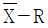
관리도를 작성한 결과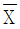
관리도의 관리한계는 CL = 360.0, LCL = 357.0 이 나왔다. 이 때 는 약 얼마인가? (단, A2 = 0.729 이다.)
는 약 얼마인가? (단, A2 = 0.729 이다.)- 4.12
- 4.57
- 4.92
- 5.11
(정답률: 40%)
36. 로트의 크기가 작을 때 샘플링 검사에서 로트가 합격될 확률 L(P)를 구하는 공식은? (단, N은 로트의 크기, n은 시료의 크기, Ac는 합격판정개수, P는 로트의 부적합품률이다.)
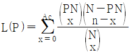
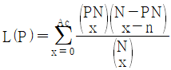
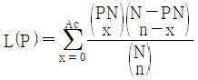
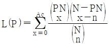
(정답률: 59%)
37. 단위 시간이나 단위 공간에서 희귀하게 일어나는 사건의 발생빈도 등에 가장 유용하게 사용될 수 있는 분포는?
- 정규분포
- 초기하분포
- 카이제곱분포
- 푸아송분포
(정답률: 73%)
38. 신뢰구간 추정에 대한 설명으로 맞는 것은?
- 신뢰구간의 폭은 넓을수록 좋다.
- 신뢰구간은 항상 모수를 포함한다.
- 99%의 신뢰구간이 95%의 신뢰구간보다 넓다.
- 정밀도가 나빠질수록 신뢰구간의 폭이 좁아진다.
(정답률: 68%)
39. 어떤 제조공정의 평균부적합률이 5%로 예측된다. 제조공정으로부터 n=100 개씩 20조를 취하여 부적합품수를 조사했더니 68 개였다. np관리도의 UCL은 약 얼마인가?
- 0.000
- 2.025
- 8.837
- 10.256
(정답률: 38%)
40. 주사이를 던져서 짝수(2, 4, 6)가 나오는 사상은 A, 2보다 같거나 작은 수(1, 2)가 나올 사상을 B라고 하면, 사상 A 또는 B가 나타나는 확률은?
- 1/12
- 1/6
- 2/3
- 5/6
(정답률: 65%)
3과목: 생산시스템
41. 재고에 관한 의사결정에 있어서 주문량의 크기 및 단위당 비용에 따라 변동하는 연간 구매비용을 중요하게 고려해야 하는 경우는?
- 경제적 생산량을 결정할 때
- 수량할인을 받기 위한 주문량을 결정할 때
- 재고부족이 허용되는 경제적 주문량을 결정할 때
- 재고부족이 허용되지 않는 경제적 주문량을 결정할 때
(정답률: 54%)
42. 조립공정에서 오준·오후에 각각 20분간의 휴식시간을 취하면서 1일(8시간)에 350단위의 제품을 조립할 계획이다. 제품 단위당 목표 사이클 타임은 약 몇 분인가?
- 1.22분
- 1.26분
- 1.32분
- 1.36분
(정답률: 70%)
43. 간트차트(Gantt chart)의 장점이 아닌 것은?
- 계획의 결과를 명확하게 파악할 수 있다.
- 작업의 성과를 작업장별로 파악할 수 있다.
- 문제점을 파악하여 사전에 중점관리할 수 있다.
- 시각에 의한 관리로 개괄적 파악이 용이하다.
(정답률: 54%)
44. 워크샘플링법의 장점에 관한 설명으로 틀린 것은?
- 특별한 측정기구 없이도 실행 가능하다.
- 관측담당자에 대한 고도의 훈련이 필요하지 않다.
- 관찰시간대를 관측자가 편한 시간으로 설정가능하므로 실행이 용이하다.
- 사이클 타임이 긴 작업의 경우에도 측정부담이 추가되는 것은 아니다.
(정답률: 50%)
45. 일정계획에서 사용되는 PERT?CPM 기법의 장점으로 틀린 것은?
- 자원의 효율적인 배분을 가능하게 한다.
- 프로젝트의 기간과 비용을 예측할 수 있다.
- 중요한 공정활동이 아닌 경미한 공정활동을 중점관리한다.
- 활동의 선·후 관계를 명확하게 하며 프로젝트의 일정을 체계적으로 결정할 수 있다.
(정답률: 75%)
46. MRP 시스템의 한 분류인 순변환(net change) 시스템의 내용으로 틀린 것은?
- 다른 유형에 비해 변화에 민감하다.
- 필요할 때마다 기록을 새로 계산한다.
- 계산시간이 적게 소요되며, 정적시스템에 적합하다.
- 재고의 정확성이 높으며, 적당한 시기에 자재를 이용할 수 있다.
(정답률: 60%)
47. 컨베이어 시스템을 이용한 이동조리법을 최초로 생산시스템에 활용한 사람은?
- 포드
- 테일러
- 간트
- 길브레스
(정답률: 70%)
48. 도요타 생산방식에서 JIT 시스템은 7가지 낭비를 제거하는 데 목적을 두고 있는데, 7가지 낭비에 해당되지 않는 것은?
- 가공의 낭비
- 고장의 낭비
- 동작의 낭비
- 과잉생산의 낭비
(정답률: 72%)
49. 예측생산의 특징에 해당되지 않는 것은?
- 범용설비를 사용한다.
- 재고관리가 중요하다.
- 생산자가 제품시방을 결정한다.
- 일반적으로 저가 제품인 경우가 많다.
(정답률: 68%)
50. 동작분석 시 연구대상이 된 신체부분에 광원을 부착하여 일정한 시간 간격으로 비대칭적인 밝기로 점멸시키면서 사진 촬영을 하여 동작에 소요된 시간, 속도, 가속도를 알 수 있는 것은?
- 아이카메라
- 메모모션분석
- 스트로보사진분석
- 크로노사이클그래프
(정답률: 61%)
51. 고객관리 프로세스를 자동화한 고객관리시스템으로 기존고객에 대한 정보를 종합적으로 분석해 우수고객을 추출하고 이들에 관한 정보를 바탕으로 1:1로 집중관리를 할 수 있는 통합마케팅 솔루션은?
- BPR
- SCM
- ERP
- CRM
(정답률: 63%)
52. 현장감독자에게 해당품목을 어떤 작업방법으로 언제까지 생산할 것인가 등의 작업명령에 관한 정보를 나타내는 것은 무엇인가?
- 작업지시서
- 기술개발서
- 생산계획서
- 부적합보고서
(정답률: 71%)
53. 시계열분서게서 계절변동(seasonal variation)을 구하는 방법으로 맞는 것은?
- 지수평활법
- 반복이동평균법
- 최소자승법
- Box-Jenkins법
(정답률: 53%)
54. 공정 중에 발생하는 모든 작업·검사·운반·저장·정체 등이 도식화된 것이며, 또한 분석에 필요하다고 생각되는 소요시간·운반거리 등의 정보가 기재된 공정도는?
- 유입유출표(From-To Chart)
- 유통공정표(Flow Proocess Chart)
- 작업공정도(Operation Process Chart)
- 조립공정도(Assembly Process Chart)
(정답률: 46%)
55. 1로트 당 정상(normal) 작업시간이 450분이며, 여유율이 10%인 작업의 총 작업시간은? (단, 로트 수는 500 이다.)
- 495분
- 41250분
- 225000분
- 247500분
(정답률: 68%)
56. ABC 재고관리의 특징과 거리가 먼 것은?
- 자재 및 재고자산의 차별 관리이다.
- 소수의 중요 품목을 중점 관리한다.
- 중요도의 구분은 파레토(Pareto) 분석으로 행한다.
- 낭비를 제거하기 위하여 적시에 필요한 원부자재를 제공한다.
(정답률: 63%)
57. 다중활동분석에 이용하는 작업분석표가 아닌 것은?
- 복수작업자분석표
- 복수기계작업분석표
- 작업자-기계작업분석표
- 작업자-복수기계작업분석표
(정답률: 60%)
58. TPM에서 설비종합효율을 표현한 식으로 맞는 것은?
- 속도가동율×정비가동율×양품율
- 속도가동율×성능가동율×양품율
- 시간가동율×정비가동율×양품율
- 시간가동율×성능가동율×양품율
(정답률: 65%)
59. 제조설비의 보전활동에 필요한 표준은 크게 3가지로 나눌 수 있다. 이에 해당되지 않는 것은?
- 설비수입표준
- 설비검사표준
- 설비수리표준
- 설비일상보전표준
(정답률: 60%)
60. 작업의 우선순위 결정방법 중 단일설비에서 납기일을 고려하지 않는 경우 평균작업 흐름시간을 최소화시키는 것은?
- 여유시간법(Slack)
- 긴급률법(Critical ratio)
- 최단처리시간법(Short processing time)
- 최장처리시간법(Longest processing time)
(정답률: 72%)
4과목: 품질경영
61. 측정시스템에서 측정오차와 관련한 용어의 설명이 틀린 것은?
- 반복성 : 동일의 작업자가 동일의 측정기를 갖고 동일한 제품을 측정하였을 때 파생되는 측정의 변동
- 정확성 : 어떤 측정기로 동일의 제품을 측정할 때에 얻어지는 측정치의 평균과 이 특성의 기준치와의 차
- 안정성 : 측정시스템의 작업 범위 내에서 등간격으로 기준을 설정하고, 설정된 각각의 기준치와 기준치별 측정값의 차이
- 재현성 : 동일한 측정기로 두 사람 이상의 다른 측정자가 동일 제품을 측정할 때에 나타나는 측정데이터의 평균값의 차이
(정답률: 58%)
62. 품질선구자와 품질사상의 연결이 틀린 것은?
- 테일러 : 검사품질(inspected quality)
- 크로스비 : 코스트 종합품질(cost integrated quality)
- 다구찌 겐이찌 : 종합적 품질관리(total quality control)
- 슈하트 : 공정관리 종합품질(process control integrated quality)
(정답률: 52%)
63. 표준화 적용의 구조 분류상 국면에 속하지 않는 것은?
- 시방
- 공업기술
- 작업기준
- 시험과 분석
(정답률: 37%)
64. 품질경영시스템 – 기본사항과 용어(KS Q ISO 9000:2015)에 정의된 품질경영원칙에 해당되지 않는 것은?
- 리더십
- 지속적 참여
- 고객중시
- 프로세스 접근법
(정답률: 48%)
65. 6시그마 교육을 받은 요원으로, 현 조직에서 업무를 수행하면서 부분적으로 개선활동에 참여하여 활동하는 요원의 자격은?
- 그린벨트
- 챔피언
- 블랙벨트
- 마스터블랙벨트
(정답률: 80%)
66. 조직의 임원들로 구성되어 있으며 품질을 향상시키기 위해 구성원들을 지휘하고 각 부서간의 업무를 조정하는 협의체는?
- 품질분임조
- 방침관리팀
- 품질개선팀
- 품질경영위원회
(정답률: 84%)
67. 품질경영시스템 – 기본사항과 용어(KS Q ISO 9000:2015)에서 최고경영자가 책임과 권한을 부여해야 하는 사항이 아닌 것은?
- 제품 및 서비스의 적합성을 보장
- 품질경영시스템의 온전성이 유지됨을 보장
- 조직 전체에서 고객중시에 대한 촉진을 보장
- 프로세스가 의도된 출력을 도출하고 있음을 보장
(정답률: 47%)
68. 기준값이 주어지지 않은
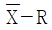
관리도에서 n = 5,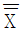
= 1.95,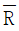
= 0.5를 얻었다. 규격이 2.0±0.5mm인 경우, 공정성능지수(PP)는 얼마인가? (단,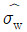
= 0.21496mm 이고,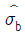
= 0.012mm 이다.)- 0.5234
- 0.6845
- 0.7741
- 1.2825
(정답률: 27%)
69. 시험 장소의 표준 상태(KS A 0006:2014)에 정의된 표준 상태의 습도로 맞는 것은?
- 상대습도 20% 또는 35%
- 상대습도 35% 또는 50%
- 상대습도 50% 또는 65%
- 상대습도 65% 또는 75%
(정답률: 52%)
70. 경쟁우위를 쟁취하기 위해서 높은 수준의 성고를 달성한 기업과 자사를 비교 평가하는 방법은?
- 카이젠
- 벤치마킹
- 6시그마
- SWOT분석
(정답률: 76%)
71. 회사의 규모에 관계없이 사내규격을 공통적으로 만들어 활용되어야 할 표준류에 해당하지 않는 것은?
- 검사표준
- 제조표준
- 제품규격
- 판매표준
(정답률: 62%)
72. 품질비용 중 예방비용의 산출항목이 아닌 것은?
- 공정검사의 비용
- 품질관리 교육비용
- 신뢰성시험 비용
- 외주업체 관리비용
(정답률: 30%)
73. 고객만족도를 조사하는 방법 중 고객들이 시장에 직접 사용하는 것과 유사한 상황을 만들어 시험을 통해 제품·서비스의 문제점을 조사하는 방법은?
- 델파이법
- 직접면담법
- 직접관찰법
- 시뮬레이션
(정답률: 69%)
74. 조립공정에서 3가지 부품의 길이에 대한 규격이 각각 0.250±0.004, 0.750±0.008, 0.325±0.001 이다. 이 3가지 부품을 임의로 직렬연결 했을 때 조립한 제품의 규격은 약 얼마인가? (단, 부품의 길이는 정규분포를 한다고 가정한다.)
- 1.325±0.0013
- 1.325±0.0081
- 1.325±0.0090
- 1.325±0.0130
(정답률: 52%)
75. 제조물책임(PL)에 있어 엄격책임은 부당하게 위험한 결함상태의 제품을 소비자에게 판매한 자는 사용자나 그의 재산에 입힌 손해에 대하여 책임이 있다는 것을 규정하고 있다. 엄격책임에 대한 설명으로 틀린 것은?
- 엄격책임 소송의 초점은 시장에 유통된 시점부터 제품에 신뢰할 수 없는 결함이 있는 경우이다.
- 타인의 권리를 침해하는 경우에 생기는 법률상의 책임으로 개인과 개인 간에 생기는 책임이다.
- 불합리하게 위험한 상태로 제품을 판매하였을 경우 계약요건에 없더라도 과실존재 입증만으로도 생산자나 판매자가 지는 책임이다.
- 제조자가 자사 제품이 더 이상 점검되지 않고 사용될 것을 알면서도 제품을 유통시켜서, 그 제품이 인체에 상해를 줄 수 있는 결함이 있는 것으로 입증될 때 적용할 수 있다.
(정답률: 74%)
76. 국내의 공산품에 대한 품질보증 표시제도 중에서 생산자가 임의로 취득할 수 있는 인증제도는 어느 것인가?
- KS표시허가제도
- 승강기 안전검사제도
- 전기용품 안전관리제도
- 열사용 기자재 형식승인제도
(정답률: 79%)
77. 확실하지 않은 아이디어나 문제에 대하여 사실이나 의견, 발상 등을 언어데이터로 파악하여 이들 사이의 관계 또는 상대적 중요성을 이해하는데 도움을 주는 기법은?
- PDPC법
- 친화도법
- 계통도법
- 애로우 다이어그램법
(정답률: 35%)
78. 품질보증의 주요 기능으로서 가장 먼저 실시해야 할 내용은?
- 설계품질의 확보
- 품질조사와 클레임 처리
- 품질방침의 설정과 전개
- 품질보증 시스템의 설정과 운영
(정답률: 61%)
79. 고객만족을 위해 공정품질수준을 1ppm으로 정하였다. 여기서 1ppm이 뜻하는 값은?
- 1/1000
- 1/10000
- 1/100000
- 1/1000000
(정답률: 73%)
80. 브레인스토밍(Brain Stoiming) 활동 원칙에 해당되는 것은?
- 남의 발언을 비판하지 않는다.
- 소수의 전문가가 의견을 내게 한다.
- 문제가 확실한 것만 의견으로 제시한다.
- 통제된 분위기에서 주관 부서장의 주도로 체계적으로 진행한다.
(정답률: 59%)